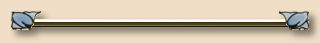

Lesson 6 asks us to create a top border. There are several ways to create a top border layout and this is one of them. The stylesheet for this page defines the heading as tiling only in the horizontal direction. This is much easier than the way I first learned to make a top border. The first top border design I ever saw used a vertical version of the left border graphic. Instead of being too wide to tile, it was too long. You can imagine how much fun that is to work with. (NOT!)
I haven't used tables in this page design. Instead, I defined the top margin as 170 pixels to move everything on the page below the top border. I have also defined the left and right margins as 20% of the width of the page so that the text isn't too wide.

Another style for top border pages is the squared-off top border. I have also created a page that illustrates the squared-off top border if you would like to see it.
Text and graphics Copyright © 2006, Irene Smith. All rights reserved.